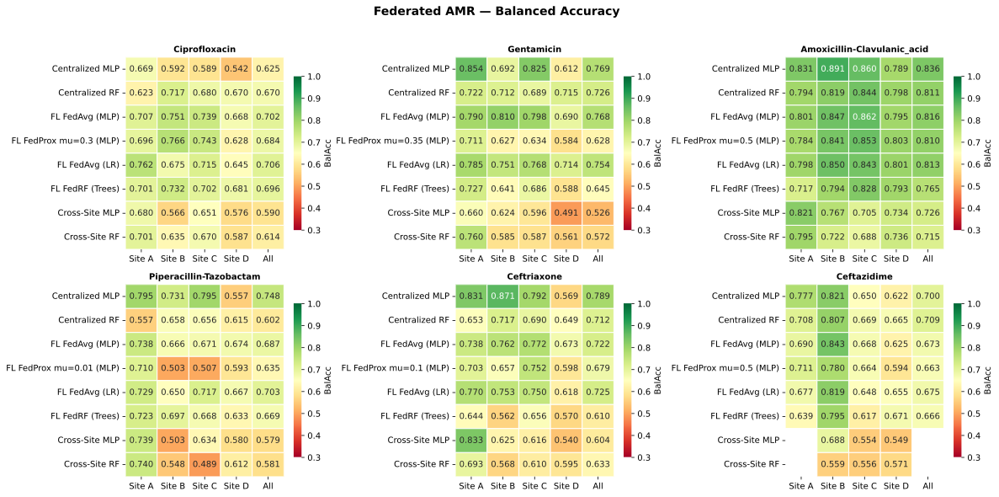
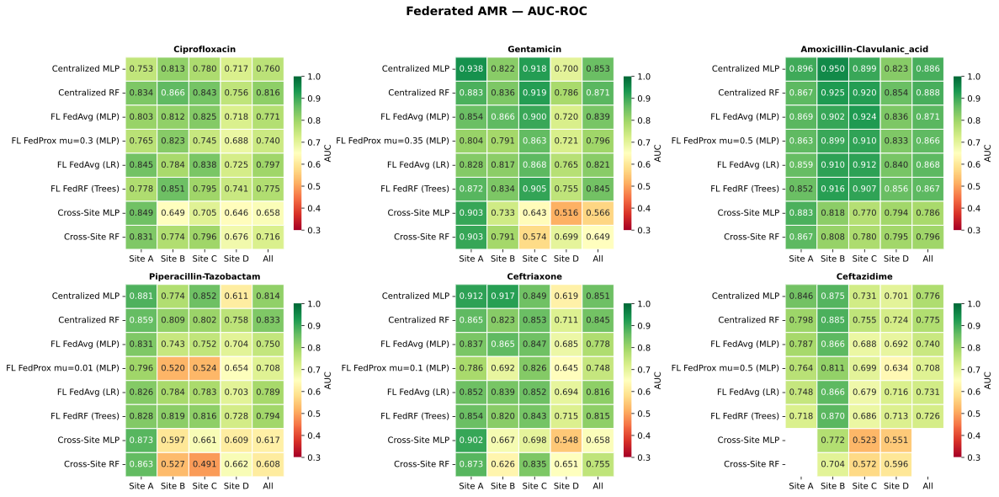
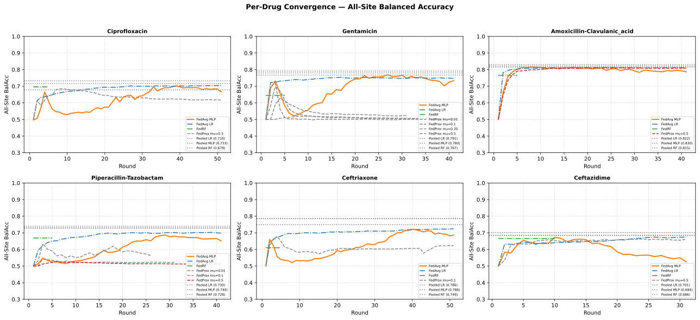

Per-Drug Results
Each drug directory contains self-contained federated notebooks that produce the following outputs per run.
Run Directory Structure
Drugs/{Drug}/{NN}-Run/
├── results/
│ ├── final_results.csv ← Best metrics per strategy
│ ├── fedavg_per_round.csv ← Per-round FedAvg MLP metrics
│ ├── fedavg_train_loss_per_round.csv ← FedAvg training loss
│ ├── fedlr_per_round.csv ← Per-round FedAvg LR metrics
│ ├── fedrf_per_round.csv ← Per-round FedRF metrics
│ ├── fedprox_mu{μ}_per_round.csv ← Per-round FedProx metrics
│ ├── fedprox_mu{μ}_train_loss_per_round.csv ← FedProx training loss
│ ├── best_params_used.txt ← Hyperparameters + mask strategy used
│ ├── convergence.pdf ← Convergence plot (all methods)
│ ├── convergence_fedprox.pdf ← FedProx per-site convergence
│ ├── convergence_fedlr.pdf ← FedLR per-site convergence
│ ├── convergence_fedrf.pdf ← FedRF per-site convergence
│ ├── heatmap_balacc.pdf ← Balanced Accuracy heatmap
│ ├── heatmap_auc.pdf ← AUC-ROC heatmap
│ └── notebook.ipynb ← Archived copy of the notebook
└── models/
├── fedavg_mlp/round_NNN/client_{id}.pt + global_model.pt
├── fedprox_mlp_mu{μ}/round_NNN/client_{id}.pt + global_model.pt
├── fedavg_lr/round_NNN/client_{id}.npz + global_model.npz
└── fedrf/round_NNN/client_{id}_trees.npy + global_trees.npy
final_results.csv Columns
Method, A_BalAcc, A_AUC, B_BalAcc, B_AUC, C_BalAcc, C_AUC,
D_BalAcc, D_AUC, All_BalAcc, All_AUC, Peak_Round, Label
The “peak round” is the round with the highest All_BalAcc after excluding round 0 (initialisation).
Drugs
Drug |
Notes |
|---|---|
Ciprofloxacin |
Most complete: 04-Run, all 5 strategies |
Gentamicin |
All 3 notebooks (federated + retries) |
Amoxicillin-Clavulanic acid |
All 3 notebooks |
Piperacillin-Tazobactam |
All 3 notebooks |
Ceftriaxone |
All 3 notebooks |
Ceftazidime |
All 3 notebooks |
Results by Drug (latest runs)
Balanced Accuracy (AUC) on the pooled four-site evaluation, taken from the
latest run of each drug. The aggregator selects the highest-numbered
{NN}-Run that has a final_results.csv: Amoxicillin-Clavulanic acid
uses 02-Run, Ceftazidime 03-Run, Ceftriaxone 07-Run (2026-09-21,
the newest run in the study), Ciprofloxacin 04-Run, and Gentamicin /
Piperacillin-Tazobactam their 01-Run.
Drug |
Centralized MLP |
Centralized RF |
FedAvg MLP |
FedAvg LR |
FedRF |
Cross-site MLP |
Cross-site RF |
|---|---|---|---|---|---|---|---|
Amoxicillin-Clavulanic acid |
0.836 (0.886) |
0.811 (0.888) |
0.816 (0.871) |
0.813 (0.868) |
0.765 (0.867) |
0.726 (0.786) |
0.715 (0.796) |
Ceftazidime |
0.700 (0.776) |
0.709 (0.775) |
0.673 (0.740) |
0.675 (0.731) |
0.666 (0.726) |
— |
— |
Ceftriaxone |
0.789 (0.851) |
0.712 (0.845) |
0.722 (0.778) |
0.725 (0.816) |
0.610 (0.815) |
0.604 (0.658) |
0.633 (0.755) |
Ciprofloxacin |
0.625 (0.760) |
0.670 (0.816) |
0.702 (0.771) |
0.706 (0.797) |
0.696 (0.775) |
0.590 (0.658) |
0.614 (0.716) |
Gentamicin |
0.769 (0.853) |
0.726 (0.871) |
0.768 (0.839) |
0.754 (0.821) |
0.645 (0.845) |
0.526 (0.566) |
0.572 (0.649) |
Piperacillin-Tazobactam |
0.748 (0.814) |
0.602 (0.833) |
0.687 (0.750) |
0.703 (0.789) |
0.669 (0.794) |
0.579 (0.617) |
0.581 (0.608) |


Per-drug Balanced Accuracy heatmaps (one panel per drug; strategies as rows, sites + All as columns), including the pooled baselines from 07.


Per-drug AUC-ROC heatmaps — the same layout and pooled baselines as the Balanced Accuracy grid above (strategies as rows, sites + All as columns).
FedProx is omitted from the table above: its tuned-μ variants are unstable on most latest runs (see Strategy Performance Patterns), and Ceftazidime’s runs do not include cross-site baselines.
Retry Notebooks
- retry_fedprox.ipynb
Re-runs only FedProx with a new μ value, then merges results in-place into a target run directory. Reloads existing FedAvg, FedLR, and FedRF results from CSVs — only FedProx is re-trained.
- retry_lr.ipynb
Re-runs only Federated LR with new C,
max_iter, androunds. Same in-place merge pattern.
Both utilities save time: no need to re-run FedAvg (40 rounds × 4 clients) just to test one new FedProx configuration.
Convergence


Per-drug convergence grids: per-round All-site Balanced Accuracy for each federated strategy (one panel per drug), with the pooled baselines from 07 as horizontal reference lines. FedAvg MLP is the primary line, FedProx variants are dashed, FedLR and FedRF have distinct styles.
Strategy Performance Patterns
Common trends across the latest runs of the 6 drugs:
Centralized MLP is the strongest single model on four drugs — Amoxicillin-Clavulanic acid (0.836), Ceftriaxone (0.789), Gentamicin (0.769), Piperacillin-Tazobactam (0.748). Two exceptions: Ciprofloxacin, where every federated strategy (0.70–0.71) clearly beats the centralized MLP (0.625), and Ceftazidime, where centralized MLP and RF are level (~0.70).
Federated learning closes most of the gap to pooled training. Best-FL versus pooled MLP: 0.008 (Ceftazidime), 0.012 (Gentamicin), 0.014 (Amoxicillin-Clavulanic acid), 0.027 (Ciprofloxacin), 0.037 (Piperacillin-Tazobactam) and 0.061 (Ceftriaxone). Relative to the cross-site baseline, FL closes 60–94% of the gap.
FedAvg LR is as strong as FedAvg MLP on Ceftriaxone (0.725 vs 0.722), Ciprofloxacin (0.706 vs 0.702) and Piperacillin-Tazobactam (0.703 vs 0.687), and within ~0.02 on the rest — the linear federated baseline is more competitive than the early 08 runs suggested.
FedProx is unstable at tuned μ. The μ=0.1/0.3/0.35/0.01 runs peak at rounds 2–8 and then decay (e.g., Ceftriaxone reports 0.679 at r3 but ends at 0.623); only the μ=0.5 runs (Amoxicillin-Clavulanic acid, Ceftazidime) are stable — the early peaks and decay are visible in the convergence grids above. Treat FedProx numbers from these runs as early transients until the strategy is stabilised, not as converged performance.
FedRF remains surprisingly competitive at 5 rounds: Amoxicillin- Clavulanic acid 0.765, Ciprofloxacin 0.696, Piperacillin-Tazobactam 0.669, Ceftazidime 0.666; weakest on Ceftriaxone (0.610). Tree collection is a viable federated strategy for tabular spectra.
Cross-site is the worst strategy everywhere (pooled BalAcc 0.53–0.73 across the ten-drug E. coli panels): single-site training is insufficient, and the centralized-vs-federated gap is largest for drugs where DRIAMS-D dominates the sample count.
See Aggregated Cross-Drug Analysis for cross-drug comparisons, and Site-D Ablation — Training without DRIAMS-D for the leave-D-out ablation (does dropping site D help the other sites?).